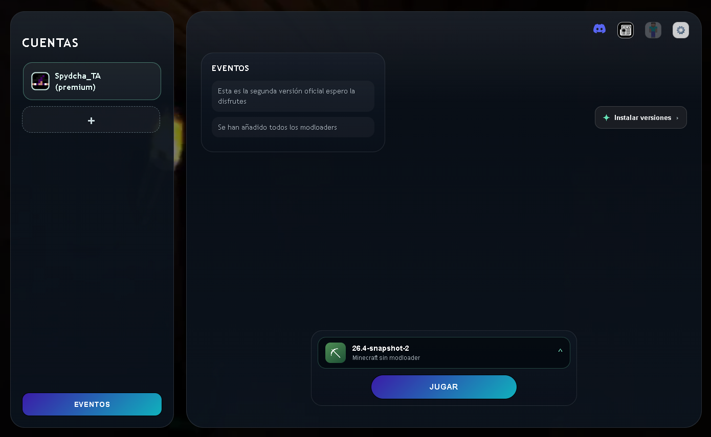

Bienvenido a SuHa Launcher
El launcher de Minecraft hecho para nuestra comunidad. Puedes entrar a eventos hechos por Spore Studios y creados solo para ustedes.
Para divertirse, no hay que ser grandes streamers
¿Cómo instalar?
Características
- Interfaz intuitiva
SuHa Launcher cuenta con una interfaz fácil de usar, diseñada para que los jugadores puedan navegar y gestionar sus juegos sin complicaciones.
- Soporte para múltiples versiones de Minecraft
En SuHa Launcher puedes gestionar fácilmente diferentes versiones de Minecraft, ya sean Vanilla o modificadas. Aparte de los eventos
- Eventos del launcher
SuHa Launcher ofrece eventos especiales dentro de Minecraft a los que puedes acceder facilmente usando el Launcher.